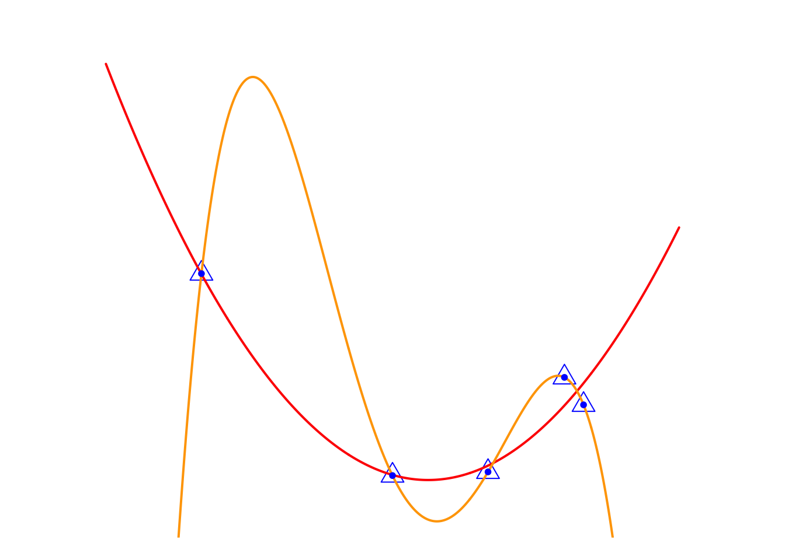
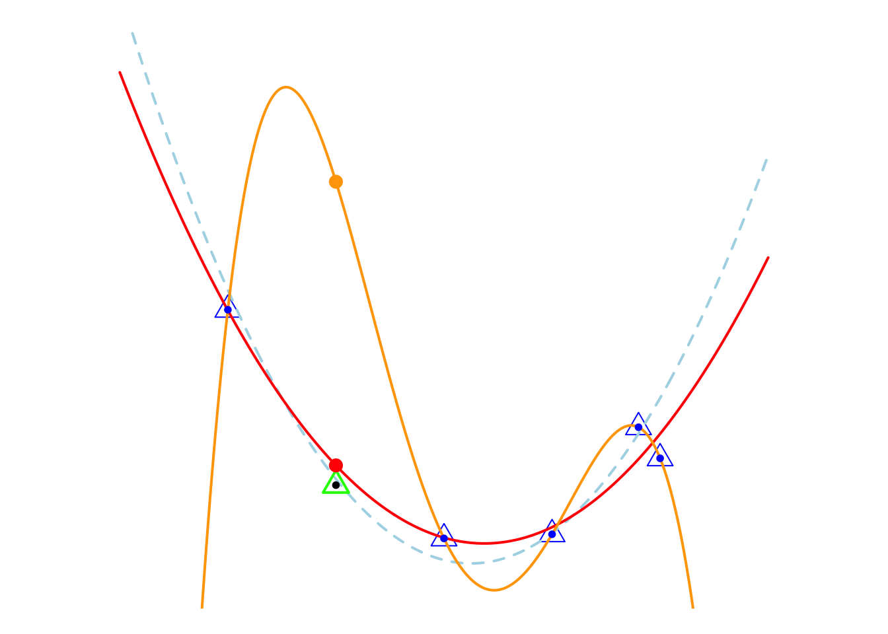
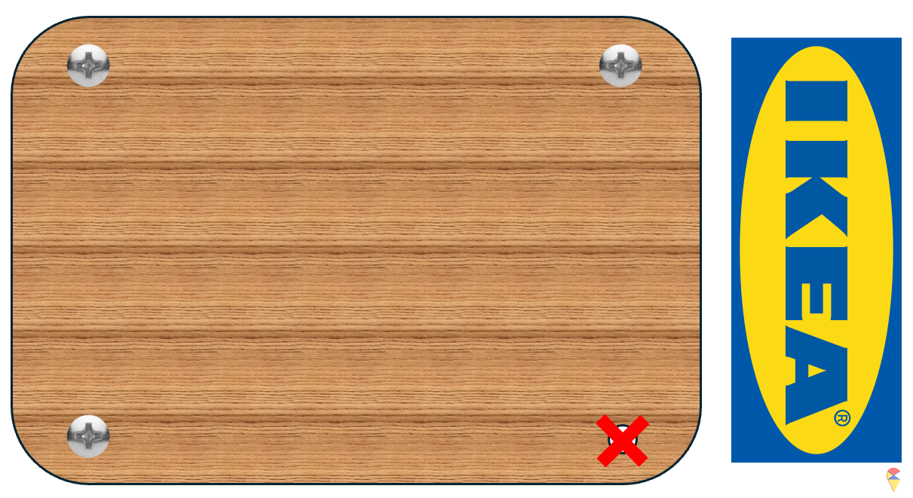
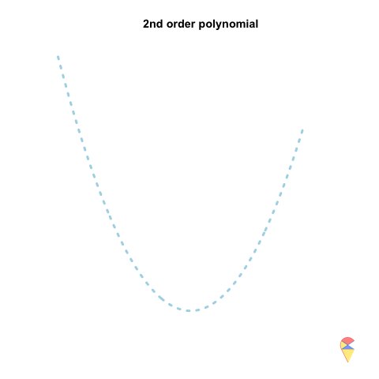
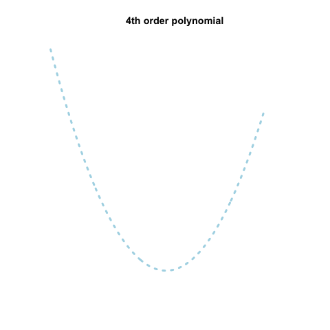
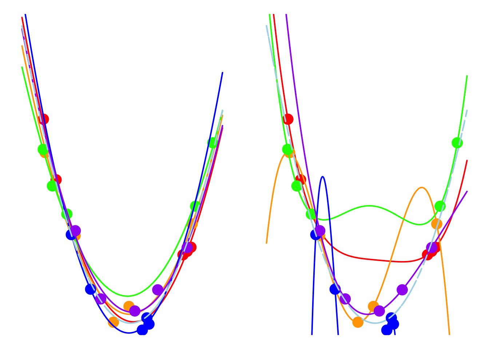

5.3 Over Fitting Problems
With the help of feature mapping or basis functions, it seems like we can achieve anything. It appears that as long as we continuously expand our feature space through feature mapping, we can always find a perfect linear model in a vast augmented feature space to solve the problem. But is it really that simple? Let’s take a look at the following example.
5.3.1 Motivating Examples
Here we have a set of data (blue triangles), and we want to use the values of the horizontal coordinate \(X\) to predict the vertical coordinate \(Y\). There are two candidate models.
- Red model: 2nd-degree polynomial regression, which performs well enough, but makes some errors on the three points on the right side.
- Orange model: 4th-degree polynomial regression, which performs perfectly because it passes exactly through every observation point, meaning it makes no errors at all.
So, the question is, which model do you think is better?
You might like the orange model because it is “perfect.” Indeed, people often pursue perfection, but behind perfection often lies a trap. Let me tell you the truth. As shown in the figure below, all the observation points are generated by the light blue dashed line plus a normal noise term. Now, let’s generate another observation point, the green triangle. At this point, the red model still performs well, but the prediction of the perfect orange model seems rather absurd.

5.3.2 Over Fitting
Let’s analyze this phenomenon. First, we need to weigh the pros and cons from two aspects, i.e. considering both the performance on the training samples and the testing samples. Therefore, I summarize the analysis of this phenomenon in the table below.
| Orange (4th order) | Red (2nd order) | |
|---|---|---|
| Training set | Perfect | Good enough |
| Testing set | Poor | Good |
| Number of coefficients | 5 | 3 |
| Complexity | Complex | Simple |
Training Set Performance
- The orange model perfectly fits the training data, capturing every fluctuation in the observations. This is often seen as an indicator of a model that is too complex, as it adjusts to every detail in the data, including noise or outliers.
- On the other hand, the red model provides a “good enough” fit. It captures the overall trend of the data without fitting every minor variation, resulting in a simpler and more generalizable model.
Performance on testing set
- When we introduce new observations (those not included in the training set), the orange model’s performance drops significantly. Despite its “perfect” fit on the training data, it fails to generalize well to unseen data, indicating that it has overfitted the training set. Overfitting occurs when a model learns not only the true underlying pattern but also random fluctuations or noise in the training data. As a result, the model performs poorly on new, real-world data.
- Conversely, the red model, with its simpler structure, generalizes better to new data points. It performs adequately on the training data and maintains reasonable performance on new observations, as it avoids overfitting by not capturing unnecessary complexity.
This phenomenon is called the overfitting problem. Simply put, if a model performs “perfectly” on the training samples but fails to generalize to new observations, it means we cannot apply the model for prediction, or in other words, we cannot extend the model to other observations.
Consequences of Overfitting:
- The model becomes overly sensitive to small variations in the training data, which doesn’t reflect the true distribution of data in the population.
- It fails to make accurate predictions when new data points are introduced, making it less useful for real-world applications.
So, what causes the overfitting problem? Let me introduce a new concept, model complexity。 It refers to how intricate or detailed a model is in terms of its structure and the number of parameters it uses. A more complex model has more parameters or can capture more intricate patterns in the data.
Model Complexity and Overfitting
The orange model has 5 coefficients, making it more complex and prone to overfitting. The extra flexibility allowed by the 4th-order polynomial gives the model the ability to fit noise, leading to poor generalization.
The red model, with only 3 coefficients, is simpler and less likely to overfit. While it may not fit the training data perfectly, its simpler structure helps it to better handle new observations.
Summary: This example demonstrates the classic overfitting problem: while complex models (like the orange model) may perform well on the training data, they fail to generalize to new data. Simpler models (like the red model) strike a better balance between fitting the data and maintaining the ability to generalize. This highlights the importance of selecting the appropriate model complexity to ensure that the model performs well not just on the training data, but also in real-world scenarios where new, unseen data is encountered.
5.3.3 An Analogy for Overfitting
I have had many frustrating experiences assembling IKEA furniture, and one of them is strikingly similar to the overfitting problem in machine learning. Imagine I’m putting together a chair, trying to screw the wooden slats into the metal frame. After tightening the first three screws, I feel like I’m almost done, but when I try to insert the fourth screw, it doesn’t fit. I’ve tightened the first three screws so much that there’s no room left to insert the last one.

This situation mirrors the concept of overfitting. By focusing too much on perfectly fitting the training data (the first three screws), I leave no flexibility for new, unseen data (the last screw). The model becomes too rigid, capturing every detail of the training data—just like I over-tightened the first screws—but fails to adapt when it encounters new observations.
5.3.4 Variance and Bias View
A 2nd-order polynomial regression model exhibits some prediction error for the \(y\) values in the training sample, whereas a 4th-order polynomial regression model always predicts the \(y\) values perfectly. As a result, the 4th-order model provides highly accurate predictions, while the 2nd-order model performs slightly worse. In statistical terms, the predictions of the 4th-order model have zero bias, whereas the 2nd-order model exhibits some bias.


However, if we repeatedly generate five observations from the light blue model and estimate the regression model each time, we will observe that the 2nd-order model produces very stable predictions. As shown in the figure, all its curves remain approximately within a certain range. In contrast, the 4th-order model is highly unstable. In statistical terms, the 4th-order model has very high variance, while the variance of the 2nd-order model is much smaller. Therefore, overfitting occurs when the model has low bias and high variance. It fits the training data too closely, including noise, leading to excellent training performance but poor generalization on unseen data. So how can we avoid the overfitting problem? We will discuss this in the next section.
